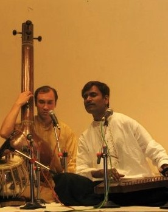

Обучение
Ильдар Хабибуллин начал преподавать индийский классический вокал с 2002 г. в Академии Индийской Классической Музыки в г. Тольятти. В течение 14 лет преподавал в разных городах России и Украины.
В данный момент возможно обучение в родном городе Ильдара, Альметьевске, или по скайпу:

Индийская рага
Раги – это мелодичная система, которая развивается экспромтом (импровизированно, непосредственно в данный момент), но согласно определенным правилам и композиции. Слово «РАГА» – производное от Санскритского корня Ран*джа, обозначающего: доставлять удовольствие, быть согласным, милым. Буквально все, что делает приятным, успокаивает ум, будет Рага. Технически – это свежая, сладкая, благозвучная комбинация музыкальных тонов, идущих последовательно один за одним. Рага сделана из особенной конструкции определенных нот, благодаря которой она пробуждает человеческий дух, успокаивает умы слушателей и дарит им радость.В курс обучения рагам входит:
- постановка голоса в индийской традиции;
- упражнения для развития слуха и голоса;
- изучение алапов и танов (импровизации с нотами);
- изучение классических ритмов (талов);
- обучение индийской манере исполнения;
- разучивание традиционных бандишей (поэтическая часть раги);
- обучение исполнению в медитационном состоянии для передачи состояния (расы) раги.
Индийский классический бхаджан
Бхаджаны - это старинная ветвь индийской музыки, произошедшая от самого древнего течения - раг. В отличии от раг, бхаджаны считаются легкой, полуклассической музыкой. Слово "бхаджан" произошло от слова "бхакти", то есть это вид песнопения, через который певец восхваляет Бога, выражая свою любовь к Нему.
Бхаджаны - сравнительно новый, по сравнению с рагами, стиль музыки, он возник в 11-12 веках нашей эры. У истоков появления этого стиля стоял великий святой, музыкант и поэт Кабир. Правила раг здесь не соблюдаются. Чаще всего бхаджан разделяется на куплеты и припевы, импровизация необязательна.
В курс обучения бхаджанам входит:
- постановка голоса в индийской традиции;
- упражнения для развития слуха и голоса;
- изучение алапов и танов (импровизации с нотами);
- изучение классических ритмов (талов);
- обучение индийской манере исполнения;
- разучивание классических бхаджанов (песен);
- обучение исполнению в медитационном состоянии.
Индийская гармоника
ГАРМОНИКА – это портативная (ручная) фисгармония, широко распространенная в практике музицирования традиции хиндустани (север Индии, Пакистан, Бангладеш, Непал). Представляет собой небольшой (до 1м в длину и 40см в высоту) инструмент с деревянным корпусом, сзади (иногда сбоку) которого расположены ручные меха, а клавиатура обращена к играющему. Воздух нагнетается мехами левой рукой музыканта, в то время как правая играет на клавиатуре.
Диапазон индийской гармоники включает до трех октав, расположенных в наиболее естественных и употребимых в инструментальном или вокальном музицировании регистрах: нижнем (мандра), среднем (мадхья) и высоком (тара). Акустическая настройка инструмента, несмотря на фиксированность звукоряда в клавиатуре, относительна, поскольку специальный механизм позволяет сдвигать весь объем его звучания вверх или вниз, в соответствии с настройкой солирующего инструмента или голоса. На инструменте играют сидя, поставив его, как правило, перед собой на пол.
Индийская гармоника – один из ярких образцов европейского инструмента, включенного в контекст культуры иного региона и приобретшего в нем новую жизнь. Позаимствованная, как можно предполагать, из практики европейских миссионеров-христиан XVIII-XIX вв., она стала широко внедряться в различные музыкальные и музыкально-танцевальные традиции севера субконтинента предположительно лишь на рубеже XIX-XX столетий, войдя в состав ансамблей, сопровождающих пение (в основном традиции кхаял и полуклассика), а также религиозно-духовных жанров (кавалли, бхаджаны и др.) и танцевальные представления на правах инструмента, вторящего основной мелодической (вокальной или инструментальной) линии.
Уроки игры на гармонике включают:
- основы индийской классической музыки;
- постановка рук;
- изучение классических ритмов (талов);
- обучение индийской манере исполнения;
- разучивание классических бхаджанов (песен);
- разучивание раг;
- импровизация в раге;
Индийская табла
Та́бла — индийский ударный музыкальный инструмент. Небольшой парный барабан, основной ударный инструмент индийской классической музыки североиндийской традиции хиндустани, используемый для сопровождения вокальной и инструментальной музыки и танца в стиле катхак.
Табла является одним из наиболее утонченных в звуковом отношении барабанов Индии, не имеющий в этом отношении аналогов и в иных музыкальных культурах мира. Особая конструкция инструмента в совокупности со сложной системой настройки позволяют варьировать его звучание в широких тембровых и экспрессивных пределах, что дает возможность т. соревноваться качеством звучания со струнными, духовыми инструментами и даже голосом, с которым этот барабан нередко выступает на равных в процессе развертывания звуковой ткани.
Уроки игры на табле включают:
- основы индийской классической музыки;
- постановка рук и разучивание различных ударов;
- изучение классических ритмов (талов);
О рагах
Рага на санскрите - краска, цвет, страсть, желание, наслаждение чем-либо. Рага является сновным понятием индийской классической традиционной музыки, охватывающая правила и предписания для построения крупной музыкальной формы. Понятие "рага" выражает взаимосвязь природных, эмоционально-психологических и музыкальных законов.
Начало Раги (Алап) исполняется медленно, с акцентом на ярких тонах, в нижнем и среднем регистре (октаве). Постепенно глубина тихого разговора музыканта с мелодией вовлекает и слушателей.
Вторая часть (Антара) начинается с появления ритма (Тала). Первая мелодическая фраза, появившаяся вместе с Талом, становится основой для многочисленных вариаций. Антара исполняется быстро, в высоком диапазоне. Далее идет Тан – очень быстрая техничная импровизация мелодии и ритма. За ними часто следует состязание исполнителей (Джугал банди), по очереди предлагающих друг другу все более сложные вариации.Сложно дать однозначное определение индийской раге. Каждая рага – результат глубокого осмысления, она несёт в себе конкретный образ, часто традиционный. Существуют специальные названия для различных категорий индийских раг. Например, рага-васанта – это музыка о весне, рага-мегха – о сезоне дождей, рага-шанти символизирует состояние покоя, рага-хасья — веселье, рага-шрингара — чувство любви. Однако индийская рага — это всегда импровизация внутри границ заданной темы. Известный на весь мир индийский ситарист Рави Шанкар считает, что рага – это нечто, что окрашивает ум. Под воздействием музыки ум человека наполняется образами, приходит в определённое состояние. С другой стороны, нельзя сказать, что музыкант полностью выдумывает рагу, скорее он открывает её заново, прочитывает по-новому и доносит участникам музыкальной церемонии через призму своего творческого вдохновения.
Европейская музыка проводит слушателя сквозь разнообразные настроения, часто контрастные, драматургически насыщенные, благодаря чему слушатель испытывает сильные переживания. Уникальность и отличие индийской раги заключается в концентрации на заданной теме, что в идеале приводит всех участников действа к необыкновенному результату, вплоть до состояния изменённого сознания.
Индийская музыкальная классика, в отличие от европейской, непригодна для светских развлечений. Она создавалась, исполняется и слушается исключительно в медитации – состоянии безмысленного сознания, молчаливой молитвы. Без духовной основы Рага кажется слушателю либо заунывно-скучной, либо раздражающе-резкой.
Каждая из 7-ми нот своим звучанием соответствует вибрациям одной из 7-ми чакр. Минор и мажор – левому и правому каналам. Таким образом, правильно подобранная Рага служит инструментом настройки тонкого тела на эталонную частоту.
Индийские традиции обучения музыке
Обучение музыке в Индии основано на традиционности и на передаче ее понимания и техники исполнения от гуру к ученику.
Искусство музыки передавалось устно, по системе парампары (от учителя к ученику). Парампара, или полностью: гуру-шишья парампара (гуру - учитель, духовный наставник; шишья - ученик; парампара - следование один за другим, наследование) - традиционная индийская система обучения, восходящая к глубокой древности. Она базируется на высоком авторитете учителя, гуру, который для ученика, во всем беспрекословно ему повинующегося, олицетворяет собой не только знание и умение, но и владение высшими ценностями духовного опыта. Начинающие музыканты учились не по текстам, а под непосредственным руководством учителя слушая и воспроизводя музыку в течение долгих лет ученичества. Они в свой черед передавали приобретенные знания следующему поколению музыкантов.
В современное время, как и в древности, ученик, утвердившийся в своём намерении стать музыкантом, прежде всего выбирает себе наставника. Встретить своего гуру на жизненном пути – это большая удача и судьбоносный момент. Уитель принимает ученика в свою семью как сына. Интенсивное обучение в постоянном общении с гуру как правило продолжается не менее семи лет. И если для западного музыканта обучение Заключается в овладение техникой игры и освоение теоретических основ музыки, то для индуса это ещё и образ жизни, философия и служение своему гуру. Первое время он только наблюдает, учится слышать и слушать, дисциплинирует свой слух, тело и ум, учится скромности и другим важным человеческим качествам, необходимым настоящему музыканту. И лишь затем ученик переходит к освоению законов построения индийских раг, а вместе с ними законов мироздания.
Важным этапом в обучении является момент, когда ученик готов перейти к стадии освоения импровизации. Настоящий музыкант – это тот, кто обладает способностью мгновенно и точно воплотить свои фантазии в музыке. Освоив это умение в совершенстве, ученик становится самостоятельным и покидает гуру. Однако даже после этого он может периодически возвращаться к учителю, потому что настоящий гуру никогда не остановится в своём развитии и всегда будет источником мудрости и знаний для своих учеников.
Ильдар Хабибуллин постигал искусство индийского традиционного вокала у одного из самых известных вокалистов Индии - пандита Прасада Кхапарде, который в свою очередь является учеником Устада Рашид Кхана. Великий индийский певец Пандит Бхимсен Джоши в свое время сказал, что Рашид Кхан «обеспечил будущее индийской вокальной музыки».